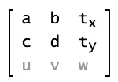

| Package | flash.geom |
| Class | public class Matrix |
| Inheritance | Matrix |
| Player version: | Flash Player 8 |
Together these types of transformations are known as affine transformations. Affine transformations preserve the straightness of lines while transforming, and parallel lines stay parallel.
To apply a transformation matrix to a movie clip, you create a flash.geom.Transform object, and set its Matrix property to the transformation matrix. Matrix objects are also used as parameters of some methods, such as the draw() method of the flash.display.BitmapData class.
A transformation matrix object is considered a 3 x 3 matrix with the following contents:

In traditional transformation matrixes the u, v, and w properties provide extra capabilities. The Matrix class can only operate in two-dimensional space so it always assumes that the property values u and v are 0.0, and that the property value w is 1.0. In other words the effective values of the matrix are as follows:

You can get and set the values of all six of the other properties in a Matrix object: a, b, c, d, tx, and ty.
The Matrix class supports the four major types of transformation functions: translation, scaling, rotation, and skewing. There are specialized methods for three of these functions, as described in the following table.
| Transformation | Method | Matrix values | Display result | Description |
|---|---|---|---|---|
| Translation (displacement) | translate(tx, ty) |  |  | Moves the image tx pixels to the right and ty pixels down. |
| Scaling | scale(sx, sy) |  |  | Resizes the image, multiplying the location of each pixel by sx on the x axis and sy on the y axis. |
| Rotation | rotate(q) |  |  | Rotates the image by an angle q, which is measured in radians |
| Skewing or shearing | None; must set the properties b and c. |  |  | Progressively slides the image in a direction parallel to the x or y axis. The b property of the Matrix object represents the tangent of the skew angle along the y axis; the c property of the Matrix object represents the tangent of the skew angle along the x axis. |
Each transformation function alters the current matrix properties so that you can effectively combine multiple transformations. To do this, you call more than one transformation function before applying the matrix to its movie clip or bitmap target.
See also
| Property | ||
|---|---|---|
| a : Number
The value in the first row and first column of the Matrix object, which affects the positioning of pixels along the x axis when scaling or rotating an image.
|
||
| b : Number
The value in the first row and second column of the Matrix object, which affects the positioning of pixels along the y axis when rotating or skewing an image.
|
||
| c : Number
The value in the second row and first column of the Matrix object, which affects the positioning of pixels along the x axis when rotating or skewing an image.
|
||
| d : Number
The value in the second row and second column of the Matrix object, which affects the positioning of pixels along the y axis when scaling or rotating an image.
|
||
| tx : Number
The distance by which to translate each point along the x axis.
|
||
| ty : Number
The distance by which to translate each point along the y axis.
|
||
| Properties inherited from class Object | |
|---|---|
__proto__, __resolve, constructor, prototype |
| Method | ||
|---|---|---|
|
Creates a new Matrix object with the specified parameters.
|
||
|
Returns a new Matrix object that is a clone of this matrix, with an exact copy of the contained object.
|
||
|
Concatenates a matrix with the current matrix, effectively combining the geometric effects of the two.
|
||
|
Includes parameters for scaling, rotation, and translation.
|
||
|
Creates the specific style of matrix expected by the
MovieClip.beginGradientFill() method. |
||
|
Given a point in the pretransform coordinate space, returns the coordinates of that point after the transformation occurs.
|
||
|
identity():Void
Sets each matrix property to a value that cause a transformed movie clip or geometric construct to be identical to the original.
|
||
|
invert():Void
Performs the opposite transformation of the original matrix.
|
||
|
Sets the values in the current matrix so that the matrix can be used to apply a rotation transformation.
|
||
|
Modifies a matrix so that its effect, when applied, is to resize an image.
|
||
|
Returns a text value listing the properties of the Matrix object.
|
||
|
Applies the geometric transformation represented by the Matrix object to the specified point.
|
||
|
Modifies a Matrix object so that the effect of its transformation is to move an object along the x and y axes.
|
||
| Methods inherited from class Object | |
|---|---|
addProperty, hasOwnProperty, isPropertyEnumerable, isPrototypeOf, registerClass, toString, unwatch, valueOf, watch |
| a | property |
public var a:Number
| Player version: | Flash Player 8 |
The value in the first row and first column of the Matrix object, which affects the positioning of pixels along the x axis when scaling or rotating an image.
myMatrix and sets its a value. import flash.geom.Matrix; var myMatrix:Matrix = new Matrix(); trace(myMatrix.a); // 1 myMatrix.a = 2; trace(myMatrix.a); // 2
| b | property |
public var b:Number
| Player version: | Flash Player 8 |
The value in the first row and second column of the Matrix object, which affects the positioning of pixels along the y axis when rotating or skewing an image.
myMatrix and sets its b value. import flash.geom.Matrix; var myMatrix:Matrix = new Matrix(); trace(myMatrix.b); // 0 var degrees:Number = 30; var radians:Number = (degrees/180) * Math.PI; myMatrix.b = Math.tan(radians); trace(myMatrix.b); // 0.577350269189626
| c | property |
public var c:Number
| Player version: | Flash Player 8 |
The value in the second row and first column of the Matrix object, which affects the positioning of pixels along the x axis when rotating or skewing an image.
myMatrix and sets its c value. import flash.geom.Matrix; var myMatrix:Matrix = new Matrix(); trace(myMatrix.c); // 0 var degrees:Number = 30; var radians:Number = (degrees/180) * Math.PI; myMatrix.c = Math.tan(radians); trace(myMatrix.c); // 0.577350269189626
| d | property |
public var d:Number
| Player version: | Flash Player 8 |
The value in the second row and second column of the Matrix object, which affects the positioning of pixels along the y axis when scaling or rotating an image.
myMatrix and sets its d value. import flash.geom.Matrix; var myMatrix:Matrix = new Matrix(); trace(myMatrix.d); // 1 myMatrix.d = 2; trace(myMatrix.d); // 2
| tx | property |
public var tx:Number
| Player version: | Flash Player 8 |
The distance by which to translate each point along the x axis. This represents the value in the first row and third column of the Matrix object.
myMatrix and sets its tx value. import flash.geom.Matrix; var myMatrix:Matrix = new Matrix(); trace(myMatrix.tx); // 0 myMatrix.tx = 50; // 50 trace(myMatrix.tx);
| ty | property |
public var ty:Number
| Player version: | Flash Player 8 |
The distance by which to translate each point along the y axis. This represents the value in the second row and third column of the Matrix object.
myMatrix and sets its ty value. import flash.geom.Matrix; var myMatrix:Matrix = new Matrix(); trace(myMatrix.ty); // 0 myMatrix.ty = 50; trace(myMatrix.ty); // 50
| Matrix | () | constructor |
public function Matrix([a:Number], [b:Number], [c:Number], [d:Number], [tx:Number], [ty:Number])
| Player version: | Flash Player 8 |
Creates a new Matrix object with the specified parameters. In matrix notation the properties will be organized like this:
If you do not provide any parameters to the new Matrix() constructor it creates an "identity matrix" with the following values:
a = 1 | b = 0 |
c = 0 | d = 1 |
tx = 0 | ty = 0 |
In matrix notation the identity matrix looks like this:

a:Number [optional] — The value in the first row and first column of the new Matrix object. |
|
b:Number [optional] — The value in the first row and second column of the new Matrix object. |
|
c:Number [optional] — The value in the second row and first column of the new Matrix object. |
|
d:Number [optional] — The value in the second row and second column of the new Matrix object. |
|
tx:Number [optional] — The value in the first row and third column of the new Matrix object. |
|
ty:Number [optional] — The value in the second row and third column of the new Matrix object. |
matrix_1 by sending no parameters to the Matrix constructor and matrix_2 by sending parameters to it. The Matrix object matrix_1, which is created with no parameters, is an identity Matrix with the values (a=1, b=0, c=0, d=1, tx=0, ty=0).
import flash.geom.Matrix;
var matrix_1:Matrix = new Matrix();
trace(matrix_1); // (a=1, b=0, c=0, d=1, tx=0, ty=0)
var matrix_2:Matrix = new Matrix(1, 2, 3, 4, 5, 6);
trace(matrix_2); // (a=1, b=2, c=3, d=4, tx=5, ty=6)
| clone | () | method |
public function clone():Matrix
| Player version: | Flash Player 8 |
Returns a new Matrix object that is a clone of this matrix, with an exact copy of the contained object.
ReturnsMatrix —
A Matrix object.
|
clonedMatrix variable from the myMatrix variable. The Matrix class does not have an equals method, so the following example uses a custom written function to test the equality of two matrixes.
import flash.geom.Matrix;
var myMatrix:Matrix = new Matrix(2, 0, 0, 2, 0, 0);
var clonedMatrix:Matrix = new Matrix();
trace(myMatrix); // (a=2, b=0, c=0, d=2, tx=0, ty=0)
trace(clonedMatrix); // (a=1, b=0, c=0, d=1, tx=0, ty=0)
trace(equals(myMatrix, clonedMatrix)); // false
clonedMatrix = myMatrix.clone();
trace(myMatrix); // (a=2, b=0, c=0, d=2, tx=0, ty=0)
trace(clonedMatrix); // (a=2, b=0, c=0, d=2, tx=0, ty=0)
trace(equals(myMatrix, clonedMatrix)); // true
function equals(m1:Matrix, m2:Matrix):Boolean {
return m1.toString() == m2.toString();
}
| concat | () | method |
public function concat(m:Matrix):Void
| Player version: | Flash Player 8 |
Concatenates a matrix with the current matrix, effectively combining the geometric effects of the two. In mathematical terms, concatenating two matrixes is the same as combining them using matrix multiplication.
For example, if matrix m1 scales an object by a factor of four, and matrix m2 rotates an object by 1.5707963267949 radians (Math.PI/2), m1.concat(m2) transforms m1 into a matrix that scales an object by a factor of four and rotates the object by Math.PI/2 radians.
This method replaces the source matrix with the concatenated matrix. If you want to concatenate two matrixes without altering either of the two source matrixes, you can first copy the source matrix the clone() method, as shown in the Example section.
Parametersm:Matrix — The matrix to be concatenated to the source matrix. |
rotate45Matrix and doubleScaleMatrix are applied to the two rectangles rectangleMc_1 and rectangleMc_2. Then the third matrix is created using the concat() method on rotate45Matrix and doubleScaleMatrix to create scaleAndRotateMatrix. This matrix is then applied to rectangleMc_3 to scale and rotate it.
import flash.geom.Matrix;
import flash.geom.Transform;
var rectangleMc_0:MovieClip = createRectangle(20, 80, 0x000000);
var rectangleMc_1:MovieClip = createRectangle(20, 80, 0xFF0000);
var rectangleMc_2:MovieClip = createRectangle(20, 80, 0x00FF00);
var rectangleMc_3:MovieClip = createRectangle(20, 80, 0x0000FF);
var rectangleTrans_1:Transform = new Transform(rectangleMc_1);
var rectangleTrans_2:Transform = new Transform(rectangleMc_2);
var rectangleTrans_3:Transform = new Transform(rectangleMc_3);
var rotate45Matrix:Matrix = new Matrix();
rotate45Matrix.rotate(Math.PI/4);
rectangleTrans_1.matrix = rotate45Matrix;
rectangleMc_1._x = 100;
trace(rotate45Matrix.toString()); // (a=0.707106781186548, b=0.707106781186547, c=-0.707106781186547, d=0.707106781186548, tx=0, ty=0)
var doubleScaleMatrix:Matrix = new Matrix();
doubleScaleMatrix.scale(2, 2);
rectangleTrans_2.matrix = doubleScaleMatrix;
rectangleMc_2._x = 200;
trace(doubleScaleMatrix.toString()); // (a=2, b=0, c=0, d=2, tx=0, ty=0)
var scaleAndRotateMatrix:Matrix = doubleScaleMatrix.clone();
scaleAndRotateMatrix.concat(rotate45Matrix);
rectangleTrans_3.matrix = scaleAndRotateMatrix;
rectangleMc_3._x = 300;
trace(scaleAndRotateMatrix.toString()); // (a=1.4142135623731, b=1.41421356237309, c=-1.41421356237309, d=1.4142135623731, tx=0, ty=0)
function createRectangle(width:Number, height:Number, color:Number):MovieClip {
var depth:Number = this.getNextHighestDepth();
var mc:MovieClip = this.createEmptyMovieClip("mc_" + depth, depth);
mc.beginFill(color);
mc.lineTo(0, height);
mc.lineTo(width, height);
mc.lineTo(width, 0);
mc.lineTo(0, 0);
return mc;
}
| createBox | () | method |
public function createBox(scaleX:Number, scaleY:Number, [rotation:Number], [tx:Number], [ty:Number]):Void
| Player version: | Flash Player 8 |
Includes parameters for scaling, rotation, and translation. When applied to a matrix it sets the matrix's values based on those parameters.
Using the createBox() method lets you obtain the same matrix as you would if you were to apply the identity(), rotate(), scale(), and translate() methods in succession. For example, mat1.createBox(2,2,Math.PI/5, 100, 100) has the same effect as the following:
import flash.geom.Matrix;
var mat1:Matrix = new Matrix();
mat1.identity();
mat1.rotate(Math.PI/4);
mat1.scale(2,2);
mat1.translate(10,20);
Parameters
scaleX:Number — The factor by which to scale horizontally. |
|
scaleY:Number — The factor by which scale vertically. |
|
rotation:Number [optional] — The amount to rotate, in radians. The default value is 0. |
|
tx:Number [optional] — The number of pixels to translate (move) to the right along the x axis. The default value is 0. |
|
ty:Number [optional] — The number of pixels to translate (move) down along the y axis. The default value is 0. |
See also
scaleX, scaleY scale, rotation, x location, and y location of myMatrix by calling its createBox() method. import flash.geom.Matrix; import flash.geom.Transform; var myMatrix:Matrix = new Matrix(); trace(myMatrix.toString()); // (a=1, b=0, c=0, d=1, tx=0, ty=0) myMatrix.createBox(1, 2, Math.PI/4, 100, 200); trace(myMatrix.toString()); // (a=0.707106781186548, b=1.41421356237309, c=-0.707106781186547, d=1.4142135623731, tx=100, ty=200) var rectangleMc:MovieClip = createRectangle(20, 80, 0xFF0000); var rectangleTrans:Transform = new Transform(rectangleMc); rectangleTrans.matrix = myMatrix;
| createGradientBox | () | method |
public function createGradientBox(width:Number, height:Number, [rotation:Number], [tx:Number], [ty:Number]):Void
| Player version: | Flash Player 8 |
Creates the specific style of matrix expected by the MovieClip.beginGradientFill() method. Width and height are scaled to a scaleX/scaleY pair and the tx/ty values are offset by half the width and height.
width:Number — The width of the gradient box. |
|
height:Number — The height of the gradient box. |
|
rotation:Number [optional] — The amount to rotate, in radians. The default value is 0. |
|
tx:Number [optional] — The distance in pixels to translate to the right along the x axis. This value will be offset by half of the width parameter. The default value is 0. |
|
ty:Number [optional] — The distance in pixels to translate down along the y axis. This value will be offset by half of the height parameter. The default value is 0. |
See also
myMatrix as a parameter for the MovieClip object's beginGradientFill() method.
import flash.geom.Matrix;
var myMatrix:Matrix = new Matrix();
trace(myMatrix.toString()); // (a=1, b=0, c=0, d=1, tx=0, ty=0)
myMatrix.createGradientBox(200, 200, 0, 50, 50);
trace(myMatrix.toString()); // (a=0.1220703125, b=0, c=0, d=0.1220703125, tx=150, ty=150)
var depth:Number = this.getNextHighestDepth();
var mc:MovieClip = this.createEmptyMovieClip("mc_" + depth, depth);
var colors:Array = [0xFF0000, 0x0000FF];
var alphas:Array = [100, 100];
var ratios:Array = [0, 0xFF];
mc.beginGradientFill("linear", colors, alphas, ratios, myMatrix);
mc.lineTo(0, 300);
mc.lineTo(300, 300);
mc.lineTo(300, 0);
mc.lineTo(0, 0);
| deltaTransformPoint | () | method |
public function deltaTransformPoint(pt:Point):Point
| Player version: | Flash Player 8 |
Given a point in the pretransform coordinate space, returns the coordinates of that point after the transformation occurs. Unlike the standard transformation applied using the transformPoint() method, the deltaTransformPoint() method's transformation does not consider the translation parameters tx and ty.
pt:Point — A Point object. |
Point —
The new Point object.
|
deltaTransformPoint() method to create deltaTransformedPoint from myPoint. In the example, the translate() method does not alter the position of the point named deltaTransformedPoint. However, the scale() method does affect that point's position. It increases the point's x value by a factor of three from 50 to 150.
import flash.geom.Matrix;
import flash.geom.Point;
var myMatrix:Matrix = new Matrix();
trace(myMatrix); // (a=1, b=0, c=0, d=1, tx=0, ty=0)
myMatrix.translate(100, 0);
trace(myMatrix); // (a=1, b=0, c=0, d=1, tx=100, ty=0)
myMatrix.scale(3, 3);
trace(myMatrix); // (a=3, b=0, c=0, d=3, tx=300, ty=0)
var myPoint:Point = new Point(50,0);
trace(myPoint); // (50, 0)
var deltaTransformedPoint:Point = myMatrix.deltaTransformPoint(myPoint);
trace(deltaTransformedPoint); // (150, 0)
var pointMc_0:MovieClip = createRectangle(10, 10, 0xFF0000);
pointMc_0._x = myPoint.x;
var pointMc_1:MovieClip = createRectangle(10, 10, 0x00FF00);
pointMc_1._x = deltaTransformedPoint.x;
function createRectangle(width:Number, height:Number, color:Number):MovieClip {
var depth:Number = this.getNextHighestDepth();
var mc:MovieClip = this.createEmptyMovieClip("mc_" + depth, depth);
mc.beginFill(color);
mc.lineTo(0, height);
mc.lineTo(width, height);
mc.lineTo(width, 0);
mc.lineTo(0, 0);
return mc;
}
| identity | () | method |
public function identity():Void
| Player version: | Flash Player 8 |
Sets each matrix property to a value that cause a transformed movie clip or geometric construct to be identical to the original.
After calling the identity() method, the resulting matrix has the following properties: a=1, b=0, c=0, d=1, tx=0, ty=0.
In matrix notation the identity matrix looks like this:
identity() method converts the calling Matrix object to an identity Matrix object. The number and types of transformations applied to the original Matrix object beforehand are irrelevant. If identity() is called, the Matrix values are converted to (a=1, b=0, c=0, d=1, tx=0, ty=0). import flash.geom.Matrix; var myMatrix:Matrix = new Matrix(2, 0, 0, 2, 0 ,0); trace(myMatrix.toString()); // (a=2, b=0, c=0, d=2, tx=0, ty=0) myMatrix.rotate(Math.atan(3/4)); trace(myMatrix.toString()); // (a=1.6, b=1.2, c=-1.2, d=1.6, tx=0, ty=0) myMatrix.translate(100,200); trace(myMatrix.toString()); // (a=1.6, b=1.2, c=-1.2, d=1.6, tx=100, ty=200) myMatrix.scale(2, 2); trace(myMatrix.toString()); // (a=3.2, b=2.4, c=-2.4, d=3.2, tx=200, ty=400) myMatrix.identity(); trace(myMatrix.toString()); // (a=1, b=0, c=0, d=1, tx=0, ty=0)
| invert | () | method |
public function invert():Void
| Player version: | Flash Player 8 |
Performs the opposite transformation of the original matrix. You can apply an inverted matrix to an object to undo the transformation performed when applying the original matrix.
halfScaleMatrix by calling the invert() method of doubleScaleMatrix, and then demonstrates that the two are Matrix inverses of one another, that is, matrixes that undo any transformations performed by the other. The example shows this inversion by creating originalAndInverseMatrix, which is equal to noScaleMatrix.
import flash.geom.Matrix;
import flash.geom.Transform;
var rectangleMc_0:MovieClip = createRectangle(20, 80, 0xFF0000);
var rectangleMc_1:MovieClip = createRectangle(20, 80, 0x00FF00);
var rectangleMc_2:MovieClip = createRectangle(20, 80, 0x0000FF);
var rectangleMc_3:MovieClip = createRectangle(20, 80, 0x000000);
var rectangleTrans_0:Transform = new Transform(rectangleMc_0);
var rectangleTrans_1:Transform = new Transform(rectangleMc_1);
var rectangleTrans_2:Transform = new Transform(rectangleMc_2);
var rectangleTrans_3:Transform = new Transform(rectangleMc_3);
var doubleScaleMatrix:Matrix = new Matrix(2, 0, 0, 2, 0, 0);
rectangleTrans_0.matrix = doubleScaleMatrix;
trace(doubleScaleMatrix.toString()); // (a=2, b=0, c=0, d=2, tx=0, ty=0)
var noScaleMatrix:Matrix = new Matrix(1, 0, 0, 1, 0, 0);
rectangleTrans_1.matrix = noScaleMatrix;
rectangleMc_1._x = 100;
trace(noScaleMatrix.toString()); // (a=1, b=0, c=0, d=1, tx=0, ty=0)
var halfScaleMatrix:Matrix = doubleScaleMatrix.clone();
halfScaleMatrix.invert();
rectangleTrans_2.matrix = halfScaleMatrix;
rectangleMc_2._x = 200;
trace(halfScaleMatrix.toString()); // (a=0.5, b=0, c=0, d=0.5, tx=0, ty=0)
var originalAndInverseMatrix:Matrix = doubleScaleMatrix.clone();
originalAndInverseMatrix.concat(halfScaleMatrix);
rectangleTrans_3.matrix = originalAndInverseMatrix;
rectangleMc_3._x = 300;
trace(originalAndInverseMatrix.toString()); // (a=1, b=0, c=0, d=1, tx=0, ty=0)
function createRectangle(width:Number, height:Number, color:Number):MovieClip {
var depth:Number = this.getNextHighestDepth();
var mc:MovieClip = this.createEmptyMovieClip("mc_" + depth, depth);
mc.beginFill(color);
mc.lineTo(0, height);
mc.lineTo(width, height);
mc.lineTo(width, 0);
mc.lineTo(0, 0);
return mc;
}
| rotate | () | method |
public function rotate(angle:Number):Void
| Player version: | Flash Player 8 |
Sets the values in the current matrix so that the matrix can be used to apply a rotation transformation.
The rotate() method alters the a, b, c, and d properties of the Matrix object. In matrix notation this is shown as follows:
angle:Number — The rotation angle in radians. |
rotate() method rotates rectangleMc 30° clockwise. Applying myMatrix to rectangleMc resets its _x value, leaving you to reset it to 100 manually.
import flash.geom.Matrix;
import flash.geom.Transform;
var myMatrix:Matrix = new Matrix();
trace(myMatrix.toString()); // (a=1, b=0, c=0, d=1, tx=0, ty=0)
var degrees:Number = 30;
var radians:Number = (degrees/180) * Math.PI;
myMatrix.rotate(radians);
trace(myMatrix.toString()); // (a=0.866025403784439, b=0.5, c=-0.5, d=0.866025403784439, tx=0, ty=0)
var rectangleMc:MovieClip = createRectangle(20, 80, 0xFF0000);
trace(rectangleMc._x); // 0
rectangleMc._x = 100;
trace(rectangleMc._x); // 100
var rectangleTrans:Transform = new Transform(rectangleMc);
rectangleTrans.matrix = myMatrix;
trace(rectangleMc._x); // 0
rectangleMc._x = 100;
trace(rectangleMc._x); // 100
function createRectangle(width:Number, height:Number, color:Number):MovieClip {
var depth:Number = this.getNextHighestDepth();
var mc:MovieClip = this.createEmptyMovieClip("mc_" + depth, depth);
mc.beginFill(color);
mc.lineTo(0, height);
mc.lineTo(width, height);
mc.lineTo(width, 0);
mc.lineTo(0, 0);
return mc;
}
_x property of the MovieClip object to position rectangleMc. Generally, when dealing with Matrix object positioning, mixing positioning techniques is considered poor format. The previous example written in correct syntax would concatenate a translation Matrix to myMatrix to change the horizontal location of rectangleMc. The following example demonstrates this.
import flash.geom.Matrix;
import flash.geom.Transform;
var myMatrix:Matrix = new Matrix();
trace(myMatrix.toString()); // (a=1, b=0, c=0, d=1, tx=0, ty=0)
var degrees:Number = 30;
var radians:Number = (degrees/180) * Math.PI;
myMatrix.rotate(radians);
trace(myMatrix.toString()); // (a=0.866025403784439, b=0.5, c=-0.5, d=0.866025403784439, tx=0, ty=0)
var translateMatrix:Matrix = new Matrix();
translateMatrix.translate(100, 0);
myMatrix.concat(translateMatrix);
trace(myMatrix.toString()); // (a=0.866025403784439, b=0.5, c=-0.5, d=0.866025403784439, tx=100, ty=0)
var rectangleMc:MovieClip = createRectangle(20, 80, 0xFF0000);
trace(rectangleMc._x); // 0
rectangleMc._x = 100;
trace(rectangleMc._x); // 100
var rectangleTrans:Transform = new Transform(rectangleMc);
rectangleTrans.matrix = myMatrix;
trace(rectangleMc._x); // 100
function createRectangle(width:Number, height:Number, color:Number):MovieClip {
var depth:Number = this.getNextHighestDepth();
var mc:MovieClip = this.createEmptyMovieClip("mc_" + depth, depth);
mc.beginFill(color);
mc.lineTo(0, height);
mc.lineTo(width, height);
mc.lineTo(width, 0);
mc.lineTo(0, 0);
return mc;
}
| scale | () | method |
public function scale(sx:Number, sy:Number):Void
| Player version: | Flash Player 8 |
Modifies a matrix so that its effect, when applied, is to resize an image. In the resized image, the location of each pixel on the x axis is multiplied by sx; and on the y axis it is multiplied by sy.
The scale() method alters the a and d properties of the matrix object. In matrix notation this is shown as follows:
sx:Number — A multiplier used to scale the object along the x axis. |
|
sy:Number — A multiplier used to scale the object along the y axis. |
scale() method to scale myMatrix by a factor of three horizontally and a factor of four vertically. import flash.geom.Matrix; var myMatrix:Matrix = new Matrix(2, 0, 0, 2, 100, 100); trace(myMatrix.toString()); // (a=2, b=0, c=0, d=2, tx=100, ty=100) myMatrix.scale(3, 4); trace(myMatrix.toString()); // (a=6, b=0, c=0, d=8, tx=300, ty=400)
| toString | () | method |
public function toString():String
| Player version: | Flash Player 8 |
Returns a text value listing the properties of the Matrix object.
ReturnsString —
A string containing the values of the properties of the Matrix object: a, b, c, d, tx, and ty.
|
myMatrix and converts its values to a string in the format of (a=A, b=B, c=C, d=D, tx=TX, ty=TY).
import flash.geom.Matrix;
var myMatrix:Matrix = new Matrix();
trace("myMatrix: " + myMatrix.toString()); // (a=1, b=0, c=0, d=1, tx=0, ty=0)
| transformPoint | () | method |
public function transformPoint(pt:Point):Point
| Player version: | Flash Player 8 |
Applies the geometric transformation represented by the Matrix object to the specified point.
Parameterspt:Point — The Point (x,y) to be transformed. |
Point —
The new Point object.
|
transformPoint() method to create transformedPoint from myPoint. The translate() method does have an affect on the position of transformedPoint. In the example, scale() increases the original x value by a factor of three from 50 to 150, and the translate() method increases x by 300 for a total value of 450.
import flash.geom.Matrix;
import flash.geom.Point;
var myMatrix:Matrix = new Matrix();
trace(myMatrix); // (a=1, b=0, c=0, d=1, tx=0, ty=0)
myMatrix.translate(100, 0);
trace(myMatrix); // (a=1, b=0, c=0, d=1, tx=100, ty=0)
myMatrix.scale(3, 3);
trace(myMatrix); // (a=3, b=0, c=0, d=3, tx=300, ty=0)
var myPoint:Point = new Point(50,0);
trace(myPoint); // (50, 0)
var transformedPoint:Point = myMatrix.transformPoint(myPoint);
trace(transformedPoint); // (450, 0)
var pointMc_0:MovieClip = createRectangle(10, 10, 0xFF0000);
pointMc_0._x = myPoint.x;
var pointMc_1:MovieClip = createRectangle(10, 10, 0x00FF00);
pointMc_1._x = transformedPoint.x;
function createRectangle(width:Number, height:Number, color:Number):MovieClip {
var depth:Number = this.getNextHighestDepth();
var mc:MovieClip = this.createEmptyMovieClip("mc_" + depth, depth);
mc.beginFill(color);
mc.lineTo(0, height);
mc.lineTo(width, height);
mc.lineTo(width, 0);
mc.lineTo(0, 0);
return mc;
}
| translate | () | method |
public function translate(tx:Number, ty:Number):Void
| Player version: | Flash Player 8 |
Modifies a Matrix object so that the effect of its transformation is to move an object along the x and y axes.
The translate() method alters the tx and ty properties of the matrix object. In matrix notation this is shown as:
tx:Number — The amount of movement along the x axis to the right, in pixels. |
|
ty:Number — The amount of movement down along the y axis, in pixels. |
translate() method to position rectangleMc x:100 and y:50. The translate() method affects the translation properties tx and ty, but it doesn't affect the a, b, c, or d properties. import flash.geom.Matrix; var myMatrix:Matrix = new Matrix(2, 0, 0, 2, 100, 100); trace(myMatrix.toString()); // (a=2, b=0, c=0, d=2, tx=100, ty=100) myMatrix.translate(100, 50); trace(myMatrix.toString()); // (a=2, b=0, c=0, d=2, tx=200, ty=150)